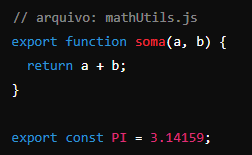
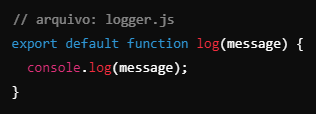
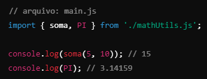
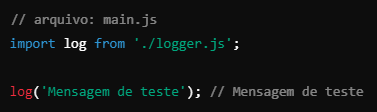
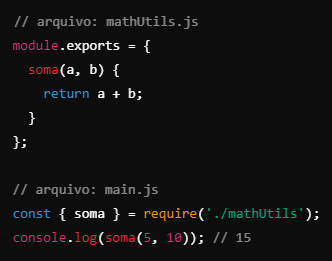

A modulação em JavaScript refere-se à prática de dividir o código em partes menores e reutilizáveis, chamadas
de módulos. Essa abordagem melhora a organização, a manutenibilidade e a legibilidade do código, além de
facilitar a reutilização de funcionalidades em diferentes partes de uma aplicação.
A modulação é uma prática essencial para o desenvolvimento de aplicações modernas em JavaScript,
principalmente em projetos grandes e complexos. Com o suporte nativo a módulos via ES6 e a popularidade de
padrões como CommonJS no Node.js, os desenvolvedores têm ferramentas poderosas para organizar e estruturar o
código de maneira eficiente.
Por que usar módulos
Tradicionalmente, em JavaScript, o código era mantido em grandes arquivos monolíticos, o que dificultava
a manutenção e aumentava a complexidade em projetos maiores. Com a modulação, podemos:
-
Organizar o código de forma lógica.
-
Evitar a duplicação de código.
-
Isolar funcionalidades, limitando o impacto de mudanças em uma parte do código no restante da
aplicação.
-
Facilitar o teste de componentes individuais.
Sintaxe de Módulos
Existem diversas maneiras de trabalhar com módulos em JavaScript, permitindo uma melhor organização e
reutilização de código em aplicações de diferentes tamanhos. Com a introdução do ES6 (ECMAScript 2015),
o JavaScript passou a oferecer suporte nativo para módulos, proporcionando uma forma mais clara e
estruturada de separar funcionalidades. Agora, é possível dividir o código em diferentes arquivos e
utilizar as instruções import e export para compartilhar ou acessar variáveis, funções e classes entre
eles. Esse novo padrão nativo de módulos traz mais flexibilidade ao desenvolvimento, reduz a
complexidade de dependências e facilita a manutenção do código, especialmente em projetos maiores.
Exportação de Módulos
O primeiro passo para modularizar seu código é exportar as partes que deseja tornar acessíveis a
outros arquivos ou partes da aplicação. Existem dois tipos principais de exportações:
-
Exportação Nomeada:
Permite exportar várias funções, variáveis
ou classes de um mesmo módulo.

-
Exportação Padrão:
Permite exportar apenas um valor por módulo, mas de forma simplificada.
javascript

Importação de Módulos
Para usar um módulo exportado em outro arquivo, você utiliza o comando import. Se o módulo foi
exportado com exportação nomeada, é necessário usar as chaves {}
-
Importação Nomeada:
Quando você deseja importar partes específicas de um módulo

-
Importação Padrão:
Quando você importa o módulo padrão de um arquivo.

Módulos com CommonJS (Node.js)
Antes do suporte nativo a módulos no ES6, o Node.js popularizou o uso de módulos através do padrão
CommonJS, que ainda é amplamente utilizado. Nesse padrão, utilizamos module.exports para exportar e
require para importar módulos. CommonJS foi e ainda é uma parte crucial do ecossistema JavaScript,
especialmente no desenvolvimento com Node.js. Ele fornece uma maneira robusta e fácil de organizar e
reutilizar código, mas com a adoção cada vez maior dos ES Modules (ESM), é provável que o uso de
CommonJS diminua em aplicações modernas de front-end e back-end.
